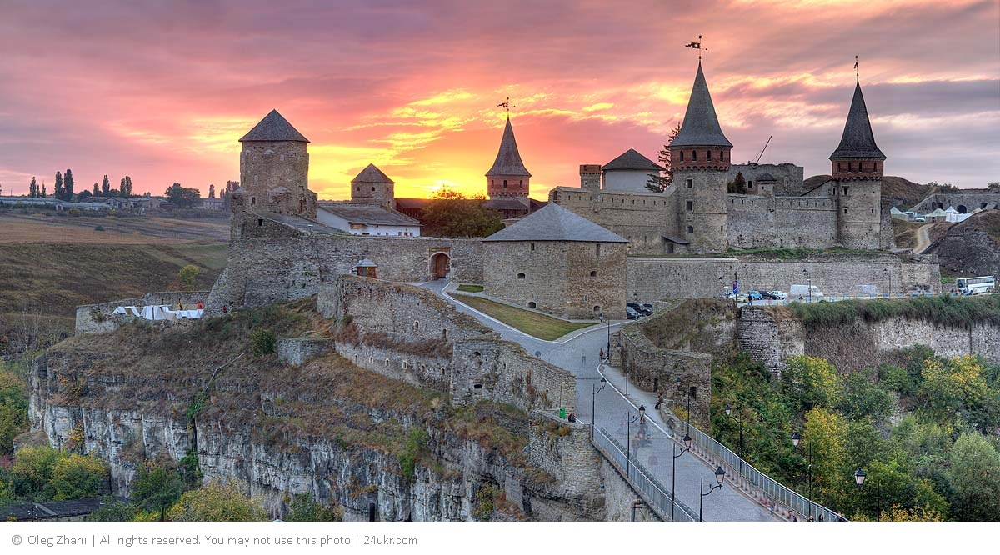
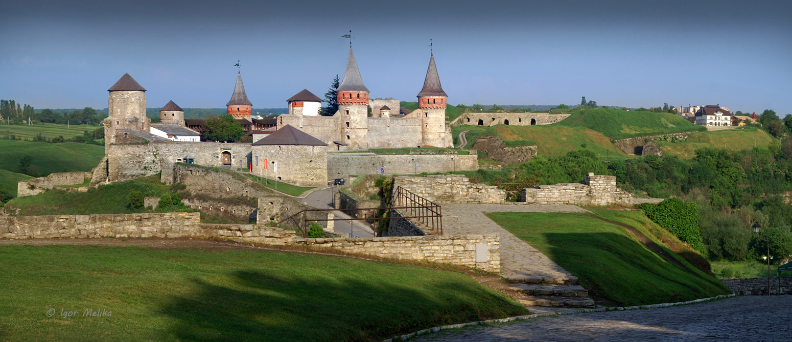

Кам’янець Подільський
Кам’янець Подільський – місто, що зберегло дух середньовіччя. Своєрідність та унікальність його полягають у гармонійному поєднанні ландшафту і містобудівної структури середньовічного міста, в якому військові інженери, використовуючи чудові природні властивості, створили фортифікаційну систему, що не має аналогів у Європі…
До творення неповторного архітектурного вигляду Кам’янець-Подільського у різні періоди його історії доклали майстерності архітектори й скульптори з Італії, Нідерландів, Вірменії, Польщі, Франції, Туреччини та ін. Сьогодні чимало туристів захоплюються вдалим поєднанням міцних оборонних мурів міста, Старого замку (XII–XVIII ст.) та високих стрімких скель каньйону річки Смотрич. Надзвичайно привабливий для любителів фортифікації і комплекс укріплень Нового замку, збудований у XVII ст., що є єдиним збереженим зразком такого типу споруд нідерландської школи. Неабиякий інтерес викликає й унікальний Замковий міст, що сполучає Старе місто із Замковим комплексом.
До складу Кам’янецької фортеці входять одинадцять башт, кожна з яких має свою назву й історію. Так, найвища башта названа Папською тому, що була збудована на кошти, надіслані Папою Римським Юлієм II. Ще її називають Кармелюковою, бо в ній тричі був ув’язнений український народний герой Устим Кармелюк. У Чорній (кутовій) башті знаходиться криниця завглибшки 40 м і діаметром 5 м, видовбана у скелі. У підземеллях Замкового комплексу відкрито експозиції, що відтворюють сторінки його історії. У західному бастіоні реконструйовано панораму оборони замку 1672 р. під частурецької навали. У східному бастіоні розміщено експозицію, присвячену історії легкої метальної зброї на Поділлі, де відвідувач може вистрілити з арбалета, відчувши себе середньовічним воїном. До нашого часу збереглася система ходів і казематів.
Сьогодні, за попередньою, домовленістю, можна стати учасником нічної театралізованої екскурсії Старою фортецею. Екскурсію у вежах (баштах) і підземеллях фортеці проводить кам’янецький «староста» та його «свита», які цікавими розповідями, піснями, танцями не лише знайомлять екскурсантів з історією замку та озброєнням, а й створюють неповторне відчуття подорожі у часі. Відвідувачі фортеці мають змогу поїздити верхи на конях, постріляти з арбалетів та луків, власноруч викарбувати пам’ятну монету.